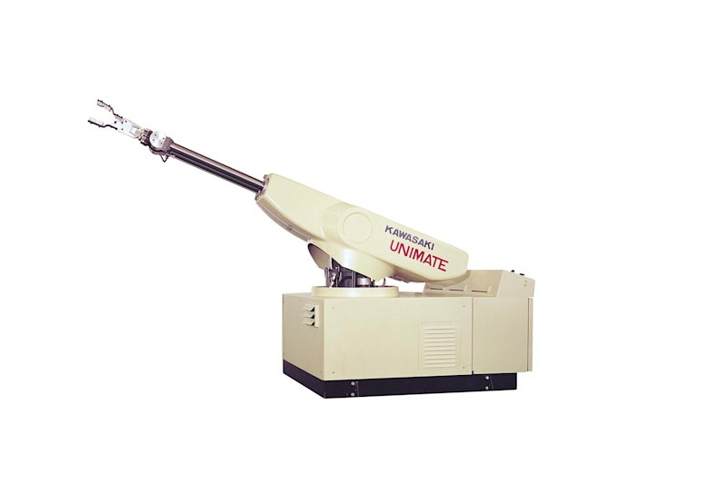
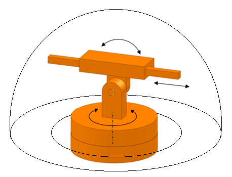
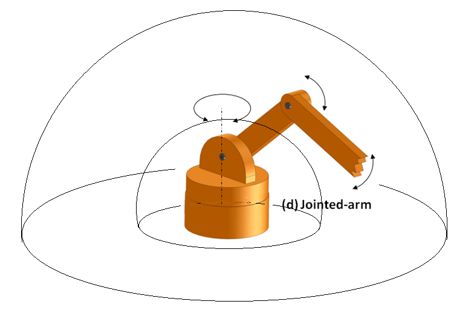
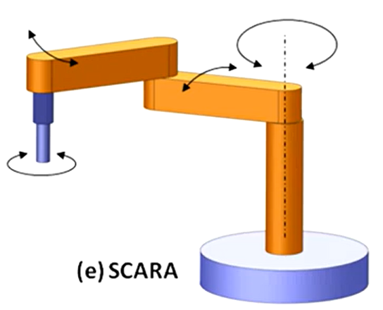

Activity1:Examples of robots by morphology
Objective:
Investigate and show examples of real life examples of robots with different morphologies.
Types of robots based on its morphology
1.- Cartesian Robot (XYZ or Gantry)
Morphology and motion
- Moves along three orthogonal linear axes (X, Y, Z).
- No primary rotational joints.
- Simple kinematics, high rigidity, and high positional accuracy.

Typical applications
- CNC machines
- 3D printing
- Pick & place systems
- Material handling
Real-world examples
-
Xyz Gantry System Gantry Robot Arm Xy Cartesian Robot CNC Gantry

-
Cartesian Robot JC-3 Series Long Stroke Model

2.- Cylindrical Robot
Morphology and motion
Cylindrical work envelope.
Functions by combining:
-
1 rotational joint (base rotation).
-
2 linear motions (radial and vertical).

Typical applications
-
Machine loading/unloading.
-
Simple assembly.
-
Material transfer.
Real-world examples
-
Cylindrical Automation Products

-
Unimate 2000 Series Robot

3.- Polar Robot (Spherical Robot)
Morphology and motion
Spherical work envelope.
Combines:
-
2 rotational joints.
-
1 linear joint.

Typical applications
-
Welding.
-
Die casting.
-
Handling of large components.
Real-world examples
-
Polar Spherical Robots Midwest Engineered Systems

-
Cincinnati Milacron T3 Robot

4.- Articulated Robot (Jointed-Arm Robot)
Act almost like if it was a human arm.
Morphology and motion
-
Composed entirely of rotational joints, this helps to have a similar human arm motion.
-
Typically 6 degrees of freedom (6-DOF).
-
High flexibility and complex reach.

Typical applications
-
Arc and spot welding.
-
Painting.
-
Complex assembly.
-
Collaborative robotics.
Real-world examples
-
KUKA KR 210

-
FANUC M-20iA 20M

5.-SCARA Robot (Selective Compliance Assembly Robot Arm)
Morphology and motion
The behaviour of this robot is to be flexible in the horizontal plane (X–Y) and rigid in the vertical direction (Z).
Motion configuration:
-
2 rotational joints in the XY plane.
-
1 linear joint along Z.
-
Compliant in XY, rigid in Z.

Typical applications
-
High-speed assemblies.
-
Electronics manufacturing.
-
Pick & place operations.
Real-world examples
-
Epson SCARA T6

-
Omron-i4 SCARA

Bibliography
-
L-5|Classifications of Robot|Cartesian|SCARA ROBOT|Jointed arm|Cylindrical|spherical|Parallel|ESE
- https://www.youtube.com/watch?v=sZaGhhKbP-w
-
Work envelope of robots
- https://electricalelibrary.com/en/2022/01/12/work-envelope-of-robots/